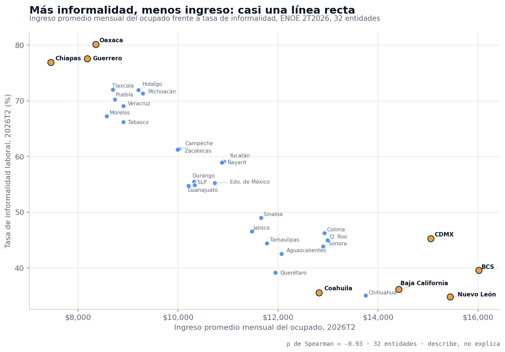
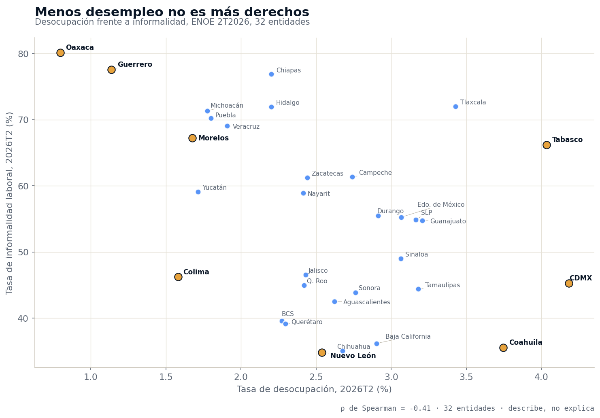
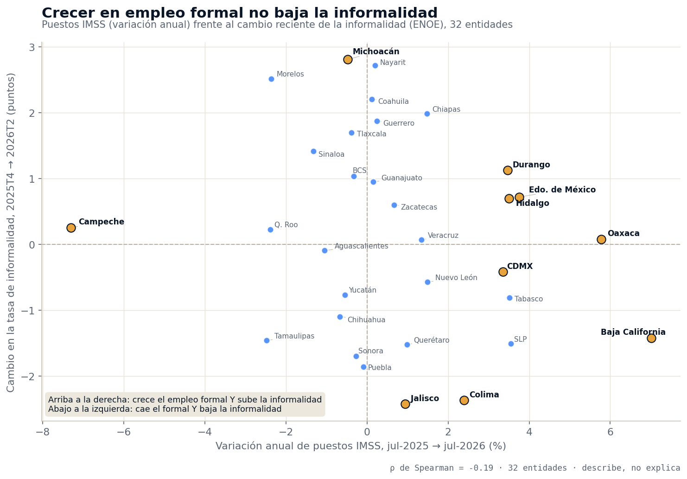
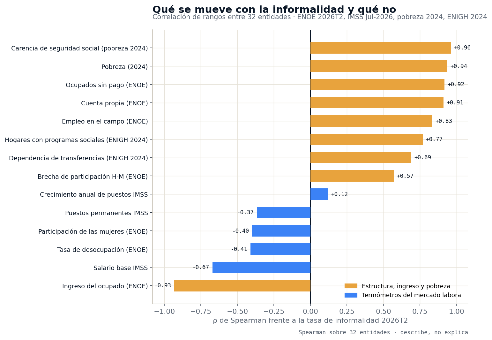

Menos desempleo no es más mercado: los 32 estados donde el ingreso y la informalidad van al revés
El ingreso promedio del ocupado y la tasa de informalidad se mueven en sentido contrario en las 32 entidades, con una correlación de −0.93. La tasa de desempleo no dice nada del poder de compra de una plaza, y el crecimiento del empleo formal del IMSS no mueve el mapa. Para quien decide dónde vender, contratar o abrir, el indicador correcto es otro, y se publica cada trimestre.

El panorama: 60 millones de ocupados, dos velocidades de ingreso
La ENOE del segundo trimestre de 2026 contabiliza 60,040,094 personas ocupadas en México, de las cuales 33,083,675 —el 55.1%— trabajan en la informalidad, y un ingreso promedio mensual del ocupado de $11,047. Ese promedio esconde el rango que importa para dimensionar un mercado: de $7,454 en Chiapas a $16,016 en Baja California Sur, 2.1 veces. Al ordenar las 32 entidades por ingreso y por informalidad, la relación entre ambas es de −0.93: casi una línea recta. Las ocho entidades con ingreso menor a $9,000 tienen todas informalidad de 66% o más; las diez con ingreso mayor a $12,000, todas de 46% o menos. No hay excepciones en ninguno de los dos grupos.
La lectura de negocio
La pregunta de arranque fue abierta: ¿qué variables se mueven junto con la informalidad entre estados, y cuáles no? La respuesta separa dos familias. La informalidad se ordena igual que el ingreso, el trabajo por cuenta propia, el trabajo sin pago y el peso del campo. No se ordena con el desempleo ni con el crecimiento del empleo formal. Los dos indicadores que más se citan para describir una plaza son los que menos dicen de su poder de compra.
Menos desempleo no es más mercado

La tasa de desempleo es el dato laboral que más circula y el que peor describe un mercado. Oaxaca tiene la desocupación más baja del país (0.8%) y, a la vez, la informalidad más alta (80.1%) y el tercer ingreso más bajo ($8,357). Guerrero: 1.1% de desocupación, 77.6% de informalidad, $8,184. Morelos: 1.7%, 67.2%, $8,575. En el otro extremo, la Ciudad de México tiene la desocupación más alta (4.2%) con 45.3% de informalidad y $15,052 de ingreso; Coahuila, 3.7%, 35.5% y $12,819. De las ocho entidades con desocupación menor a 2%, seis están entre las diez de mayor informalidad. La correlación entre desocupación e informalidad es de −0.41: débil, y en la dirección contraria a la intuición.
La razón está en cómo se mide: quien vende en la calle, trabaja la parcela familiar o ayuda en el negocio de un pariente sin sueldo cuenta como ocupado. En los estados donde nadie puede permitirse estar desempleado, la ocupación es casi total y el ingreso es el más bajo. A nivel nacional, por cada persona desocupada hay 2.5 subocupadas (1,636,604 frente a 4,115,690): el problema del mercado laboral mexicano no es la falta de trabajo sino la calidad y el ingreso del trabajo que existe. Para dimensionar demanda, un 0.8% de desempleo no es una señal de fortaleza: es la señal de que el consumo formal es mínimo.
El empleo formal crece y el mapa no se mueve

El segundo indicador que engaña es el más usado para celebrar una plaza: los puestos registrados en el IMSS. A julio de 2026 el país tiene 22,760,154 puestos formales, 326,987 más que un año antes (+1.5%), con un salario base de cotización de $673.92 diarios. Pero por entidad, ese crecimiento no se traduce en menos informalidad: la correlación entre la variación anual de puestos IMSS y el cambio reciente en la informalidad es de −0.19. Oaxaca creció 5.8% en puestos IMSS —segundo lugar nacional— y su informalidad se quedó en 80.1%. El Estado de México sumó 73,855 puestos (+3.8%) y su informalidad subió 0.7 puntos; Hidalgo y Durango crecieron 3.5% y subieron 0.7 y 1.1. Al revés, Jalisco fue el estado donde más bajó la informalidad (−2.4 puntos) con un crecimiento formal de apenas 0.9%. De los ocho estados con mayor crecimiento IMSS, en cuatro subió la informalidad y en cuatro bajó. Baja California es el único que combina las dos cosas: +7.0% en puestos y −1.4 puntos.
El agregado nacional va en la misma línea. Según el boletín 503/26 del INEGI, entre el segundo trimestre de 2025 y el de 2026 el país sumó 599,334 ocupados netos, mientras 915,189 personas se incorporaron al sector informal y el 62% de los ocupados nuevos trabaja por cuenta propia. El empleo formal y el mercado informal crecen al mismo tiempo, en lugares distintos, y el segundo crece más rápido.
Dos termómetros que no se hablan
El IMSS cuenta puestos donde está registrado el patrón; la ENOE cuenta personas donde viven. Comparando los cambios de ambas fuentes por entidad —326,987 puestos IMSS más en un año frente a 254,240 ocupados más en la ENOE entre 4T2025 y 2T2026— la correlación es de −0.02. Los estados que más suman puestos formales no son los que más suman ocupados. Por eso en una matriz de sitio deben ir en columnas separadas y nunca en un mismo cociente. Lo mismo aplica al salario base IMSS: correlaciona en −0.67 con la informalidad, y va de $800 diarios en la Ciudad de México a $539 en Nayarit y $554 en Oaxaca, pero describe solo al trabajador formal privado, que en Oaxaca es una minoría.
Lo que sí ordena el poder de compra

La escalera completa ordena la decisión. Junto con la informalidad se mueven, con fuerza, la proporción de ocupados que trabajan por cuenta propia (0.91), la de quienes trabajan sin pago (0.92) y el peso del empleo agropecuario (0.83): es decir, el tipo de unidad económica donde la gente trabaja. En Oaxaca el 37.8% de los ocupados es cuenta propia y el 10.8% trabaja sin pago; en Baja California Sur, 14.6% y 0.7%. Y dos fuentes ajenas al mercado laboral confirman el mapa: la carencia de acceso a la seguridad social de la medición de pobreza 2024 correlaciona en 0.96 con la informalidad, y la pobreza en 0.94. Un instrumento levantado dos años antes, con otro universo, dibuja exactamente el mismo orden de estados. Para un plan de expansión eso significa que el perfil de consumo de una plaza es estructural: no lo cambia un buen año de contratación formal ni un trimestre de bajo desempleo.
| Entidad | Informalidad 2T2026 | Ingreso mensual del ocupado | Ingreso vs nacional | Desocupación | Cuenta propia | Puestos IMSS, var. anual | Salario base IMSS (diario) | Cambio informalidad (pp) |
|---|---|---|---|---|---|---|---|---|
| Oaxaca | 80.1% | $8,357 | 0.76 | 0.8% | 37.8% | +5.8% | $554 | +0.1 |
| Guerrero | 77.6% | $8,184 | 0.74 | 1.1% | 33.0% | +0.2% | $556 | +1.9 |
| Chiapas | 76.9% | $7,454 | 0.67 | 2.2% | 33.1% | +1.5% | $580 | +2.0 |
| Tlaxcala | 72.0% | $8,698 | 0.79 | 3.4% | 22.3% | −0.4% | $565 | +1.7 |
| Hidalgo | 72.0% | $9,206 | 0.83 | 2.2% | 26.4% | +3.5% | $571 | +0.7 |
| Michoacán | 71.3% | $9,294 | 0.84 | 1.8% | 22.6% | −0.5% | $562 | +2.8 |
| Puebla | 70.3% | $8,739 | 0.79 | 1.8% | 23.6% | −0.1% | $593 | −1.9 |
| Veracruz | 69.1% | $8,907 | 0.81 | 1.9% | 28.1% | +1.3% | $648 | +0.1 |
| Morelos | 67.2% | $8,575 | 0.78 | 1.7% | 23.4% | −2.4% | $598 | +2.5 |
| Tabasco | 66.2% | $8,910 | 0.81 | 4.0% | 23.5% | +3.5% | $595 | −0.8 |
| Campeche | 61.4% | $10,029 | 0.91 | 2.7% | 25.2% | −7.3% | $712 | +0.3 |
| Zacatecas | 61.2% | $9,991 | 0.90 | 2.4% | 21.8% | +0.7% | $654 | +0.6 |
| Yucatán | 59.1% | $10,919 | 0.99 | 1.7% | 21.8% | −0.5% | $562 | −0.8 |
| Nayarit | 58.9% | $10,881 | 0.99 | 2.4% | 21.2% | +0.2% | $539 | +2.7 |
| Durango | 55.5% | $10,320 | 0.93 | 2.9% | 20.9% | +3.5% | $552 | +1.1 |
| Estado de México | 55.3% | $10,734 | 0.97 | 3.1% | 23.5% | +3.8% | $609 | +0.7 |
| San Luis Potosí | 54.9% | $10,330 | 0.94 | 3.2% | 21.6% | +3.6% | $687 | −1.5 |
| Guanajuato | 54.8% | $10,208 | 0.92 | 3.2% | 18.9% | +0.2% | $601 | +0.9 |
| Sinaloa | 49.0% | $11,659 | 1.06 | 3.1% | 20.0% | −1.3% | $546 | +1.4 |
| Jalisco | 46.5% | $11,480 | 1.04 | 2.4% | 16.9% | +0.9% | $659 | −2.4 |
| Colima | 46.2% | $12,927 | 1.17 | 1.6% | 14.8% | +2.4% | $605 | −2.4 |
| Ciudad de México | 45.3% | $15,052 | 1.36 | 4.2% | 21.6% | +3.3% | $800 | −0.4 |
| Quintana Roo | 45.0% | $12,991 | 1.18 | 2.4% | 18.6% | −2.4% | $600 | +0.2 |
| Tamaulipas | 44.4% | $11,778 | 1.07 | 3.2% | 18.6% | −2.5% | $706 | −1.5 |
| Sonora | 43.9% | $12,905 | 1.17 | 2.8% | 18.1% | −0.3% | $652 | −1.7 |
| Aguascalientes | 42.5% | $12,070 | 1.09 | 2.6% | 15.3% | −1.0% | $652 | −0.1 |
| Baja California Sur | 39.6% | $16,016 | 1.45 | 2.3% | 14.6% | −0.3% | $647 | +1.0 |
| Querétaro | 39.2% | $11,945 | 1.08 | 2.3% | 18.1% | +1.0% | $734 | −1.5 |
| Baja California | 36.2% | $14,418 | 1.31 | 2.9% | 16.7% | +7.0% | $746 | −1.4 |
| Coahuila | 35.5% | $12,819 | 1.16 | 3.7% | 15.2% | +0.1% | $680 | +2.2 |
| Chihuahua | 35.1% | $13,753 | 1.24 | 2.7% | 15.9% | −0.7% | $699 | −1.1 |
| Nuevo León | 34.8% | $15,446 | 1.40 | 2.5% | 14.8% | +1.5% | $740 | −0.6 |
| Nacional | 55.1% | $11,047 | 1.00 | 2.7% | 22.0% | +1.5% | $674 | +0.1 |
Las 32 entidades ordenadas por tasa de informalidad laboral (ENOE 2T2026). Ingreso promedio mensual del ocupado, desocupación y cuenta propia: ENOE 2T2026. Puestos IMSS: variación julio 2025 a julio 2026, sector total y ambos sexos; salario base de cotización diario a julio 2026. Cambio en informalidad: 4T2025 a 2T2026, serie corta, dirección y no variación anual. En color, las diez entidades con ingreso del ocupado mayor a $12,000. Fuente: INEGI e IMSS.
Tres velocidades de consumo que salen solas de los datos
Sin clasificar de antemano, las 32 entidades se separan en tres bloques por su nivel de informalidad, y cada bloque arrastra ingreso, estructura del empleo y peso del empleo formal:
- Mercado formal (14 entidades, informalidad menor a 50%): de Sinaloa (49.0%) a Nuevo León (34.8%), pasando por Jalisco, la Ciudad de México, Querétaro y toda la frontera norte. Promedian 41.7% de informalidad y $13,233 de ingreso, 17.1% de cuenta propia y 1.5% sin pago. Concentran 25.3 millones de ocupados y el 63.6% de los puestos IMSS del país. Es donde vive la nómina bancarizada, el crédito al consumo y el ticket formal.
- Mercado mixto (8 entidades, entre 50% y 65%): Campeche, Zacatecas, Yucatán, Nayarit, Durango, Estado de México, San Luis Potosí y Guanajuato. Promedian 57.6% de informalidad y $10,427 de ingreso. Aquí el Estado de México es el caso a vigilar por volumen: con 55.3% de informalidad tiene 4.48 millones de ocupados informales, el 13.5% de todos los del país, más que cualquier otra entidad.
- Mercado informal (10 entidades, 65% o más): Oaxaca, Guerrero, Chiapas, Tlaxcala, Hidalgo, Michoacán, Puebla, Veracruz, Morelos y Tabasco. Promedian 72.3% de informalidad, $8,633 de ingreso, 27.4% de cuenta propia y 5.6% sin pago. Tienen el 30.8% de los ocupados del país (18.5 millones) y solo el 15.0% de los puestos IMSS. Su empleo formal creció 1.3% en el año —más que el bloque formal, 0.6%— y aun así su informalidad subió 0.9 puntos en promedio.
El contraste entre el primer bloque y el tercero deshace la intuición más común: el bloque donde más creció el empleo formal en el último año es el de mayor informalidad, y fue donde la informalidad más subió. Una campaña de contratación en Oaxaca o Hidalgo no cambia el perfil de consumo del estado en el horizonte de un plan de negocio.
El perfil del consumidor: masa contra proporción
La tasa dice qué tan formal es una plaza; el volumen dice cuántos clientes hay en cada canal. Los dos se leen juntos. La Ciudad de México tiene 45.3% de informalidad —bloque formal— y aun así 2.21 millones de ocupados informales, la tercera cifra del país, detrás del Estado de México (4.48 millones) y Veracruz (2.29 millones); Puebla tiene 2.19, Jalisco 1.78 y Chiapas 1.71. Un mercado de efectivo y ticket bajo de más de dos millones de personas cabe dentro de la plaza de mayor ingreso del país. Al revés, Baja California Sur tiene el ingreso más alto ($16,016) y 39.6% de informalidad, pero es una de las entidades con menos ocupados: mercado de alto valor y baja escala. Ya lo desarrollamos con el universo completo en el mapa de los 32.6 millones que no pasan por el ticket; lo que agrega este cruce es que ese mapa no lo mueven ni el desempleo ni el IMSS.
Insights para la acción
1. Saca la tasa de desempleo de tu matriz de sitio y mete la informalidad. Con −0.93 frente al ingreso, la informalidad es el mejor predictor disponible del poder de compra formal de una plaza; el desempleo, con −0.41 y en sentido contrario, es ruido. Un 0.8% de desocupación en Oaxaca no es demanda: es ausencia de consumo formal.
2. No uses el crecimiento IMSS como señal de que una plaza se está formalizando. Con −0.19, un buen año de puestos formales no dice nada sobre el cambio en el perfil de consumo. Sirve para dimensionar la nómina formal —cuántos empleados con prestaciones hay para contratar o para vender— pero no para proyectar el canal en el que se venderá dentro de tres años.
3. Diseña el canal por bloque, no por estado. Los tres bloques tienen estructuras de venta distintas: en el formal manda la nómina bancarizada y el crédito; en el informal, el efectivo, el punto de venta de barrio y el ticket bajo, con un cliente que es cuenta propia (27.4%) y no asalariado. Un mismo producto necesita dos modelos de distribución para cubrir Nuevo León y Guerrero.
4. Cruza tasa con volumen antes de descartar. Los 2.21 millones de informales de la Ciudad de México o los 4.48 del Estado de México son mercados más grandes que la ocupación total de varias entidades del bloque informal. El primer paso de cualquier estudio de mercado es ese cruce; el segundo, revisar la estructura del empleo con el mapa cruzado de productividad y costo laboral, donde la informalidad también resultó ser la variable que ordena el salario.
Conclusión
México tiene un mapa de poder de compra muy estable y dos indicadores muy citados que no lo describen. El ingreso del ocupado y la informalidad van al revés en las 32 entidades, sin excepciones en los extremos; el desempleo apunta en la dirección equivocada y el crecimiento del empleo formal no mueve el mapa en el horizonte de un año. El país sumó 326,987 puestos IMSS en doce meses y, en el mismo periodo, 915,189 personas entraron al sector informal. Para quien decide dónde vender, contratar o abrir, la ventaja está en leer la variable correcta —la informalidad, publicada cada trimestre por entidad— y no la que sale en los titulares.
Preguntas frecuentes
¿En qué estados el trabajador promedio gana más y en cuáles menos?
Por ingreso promedio del ocupado (ENOE 2T2026): Baja California Sur ($16,016), Nuevo León ($15,446), Ciudad de México ($15,052), Baja California ($14,418) y Chihuahua ($13,753). En el extremo bajo: Chiapas ($7,454), Guerrero ($8,184), Oaxaca ($8,357), Morelos ($8,575) y Tlaxcala ($8,698). La distancia entre el primero y el último es de 2.1 veces.
¿La tasa de desempleo indica el tamaño del mercado de consumo?
No. La correlación entre desocupación e informalidad es de −0.41 y va al revés de la intuición: Oaxaca tiene la desocupación más baja (0.8%) con la informalidad más alta (80.1%) y $8,357 de ingreso; la Ciudad de México, la más alta (4.2%) con 45.3% y $15,052. La que ordena el poder de compra es la informalidad: −0.93 frente al ingreso.
¿El crecimiento del empleo formal IMSS reduce la informalidad?
No en los datos recientes: −0.19 entre la variación anual de puestos IMSS y el cambio en la informalidad. Oaxaca creció 5.8% en IMSS y se quedó en 80.1%; Jalisco bajó 2.4 puntos de informalidad con 0.9% de crecimiento formal.
¿Cuántos consumidores informales hay y dónde están?
33,083,675 ocupados informales en el 2T2026, el 55.1%. En volumen: Estado de México 4.48 millones (13.5%), Veracruz 2.29, Ciudad de México 2.21, Puebla 2.19, Jalisco 1.78 y Chiapas 1.71. Las diez entidades con informalidad de 65% o más suman 13.4 millones, el 40.5%.
Análisis basado en la Encuesta Nacional de Ocupación y Empleo del segundo trimestre de 2026 del INEGI (nivel nacional y estatal; serie disponible 4T2025–2T2026, y boletín de resultados 503/26 para la variación anual), en los puestos de trabajo registrados en el IMSS a julio de 2025 y julio de 2026 (sector total, ambos sexos, nivel estatal) y en la medición de pobreza 2024 del INEGI (nivel estatal), consultados en la capa de datos validada de Lokus. Universo completo: las 32 entidades federativas, sin preselección. Definiciones: tasa de informalidad = ocupación informal ÷ población ocupada; ingreso = ingreso promedio mensual de la población ocupada; cuenta propia y sin pago = trabajadores por cuenta propia y no remunerados ÷ ocupados; puestos IMSS = puestos registrados por entidad del patrón, sin trabajo informal, sector público ni ISSSTE. La ENOE mide personas donde viven y el IMSS puestos donde está el patrón: son fuentes independientes, aquí comparadas en paralelo y nunca combinadas en un mismo cociente. La medición de pobreza es una fotografía de 2024 y se cruza con la ENOE 2026 como mapa, no como movimiento. El cambio en informalidad se calcula dentro de la serie disponible (4T2025 a 2T2026) y es dirección reciente, no variación anual. Correlaciones de Spearman (rangos) sobre las 32 entidades: describen un orden común, no prueban causalidad. Los tres bloques se formaron después de observar los datos, con cortes en 50% y 65%. La ENOE no tiene desagregación municipal; el empleo municipal formal se consulta en el IMSS. Fecha de análisis: 28 de agosto de 2026. Este artículo actualiza y amplía, con el cruce de fuentes y datos del 2T2026, el mapa del mercado informal publicado el 17 de julio de 2026 con datos del 1T2026. Para dimensionar el mercado, la competencia y el perfil laboral de cualquier estado o municipio con datos oficiales integrados, visita lokusdata.com